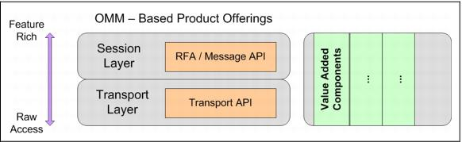

What is the Transport API? The Transport API is a low-level transport API that provides the most flexible development environment to the application developer. It is the foundation on which all Thomson Reuters OMM-based components are built. The Transport API allows applications to achieve the highest throughput and lowest latency available with any OMM API, but requires applications to perform all message encoding/decoding and manage all aspects of network connectivity. Transport API, Elektron API, and RFA make up the set of OMM API offerings.  Figure 2: OMM APIs with Value Added Components The Transport API Value Added Components provide alternate entry points for applications to leverage OMM-Based APIs with more ease and simplicity. These optional components help to offload much of the connection management code and perform encoding and decoding of some key OMM domain representations. Unlike older Domain-based APIs that lock the user into capabilities or ease of use into the highest layer of API, Value Added components are independently implemented for use with the Transport API and RFA in their native languages (Example: Transport API in C and Java, RFA in C++ and Java). These implementations are then shipped with the RFA and Transport API products respectively, as options for the application developer that may want these additional capabilities.